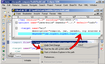

StartExplorer Eclipse Plug-in
| Eclipse-Update-URL: | http://startexplorer.sourceforge.net/update/ |
| Sourceforge: | http://sourceforge.net/projects/startexplorer/ |
| Plug-in documentation: | Exported Eclipse help files |
| License: | GPL (Gnu General Public License) |
| Plug-in author: | Bastian Krol |
Warning: Some parts of this plug-in only work with Windows.
Every now and then when working with Eclipse you'd like to examine a file or a
folder inside the Eclipse workspace with your Windows Explorer. Or you edit
a configuration file in an Eclipse editor which references another file
in the filesystem and you wonder what's in that file or you would like to
open it in a different application. This plug-in gives you a convenient way to
do all this by adding a few entries to Eclipse's context menus. Furthermore,
it offers a different (faster) way to issue any shell/dos command you like
through customizable menu commands.
Top
Description
This plug-in offers a convenient integration of the Windows Explorer, the Windows command line, Windows default system applications and the clipboard into Eclipse. It adds a new submenu to Eclipse's standard context menus named StartExplorer in two places. The first one is the context menu for resource views like the Navigator, the Java Package Explorer and so on. The second on is added to the context menu for selected text regions in editor views.
Context Menu Options for Resources
In resource views like the Navigator or Package Explorer you can select files and folders. StartExplorer offers the following options here:- Show resource(s) in Windows Explorer
- Start this (these) file(s) with system editor
- Start cmd.exe here
- Copy resource path to clipboard
- Custom Commands
All options work with a single selected resource as well as with multiple resources. If multiple resources are selected and an option only works for files (or only for folders) all resources of the wrong type are ignored and the command is executed for the resources it is applicable for.
Show resource(s) in Windows Explorer: (Works for files and folders) Starts a Windows Explorer for the selected resource. If it is a folder, a Windows Explorer is opened for this folder. If it is a file, a Windows Explorer is opened for the parent folder of this file. If multiple resources are selected, a separate Windows Explorer instance is opened for each resource.
Start this (these) file(s) with system editor: (Works for files only) Opens the selected file in the Windows application that is associated with it's file type. If multiple resources are selected then for each resource the default application will be started separately.
Start cmd.exe here: (Works for folders only) Opens a command line prompt with the selected folder as it's starting directory. If multiple resources are selected, separate commmand line prompts are opened for each of them.
Copy resource path to clipboard: (Works for files and folders) Copies the absolute path of the selected resource to the clipboard. If multiple resources are selected, all resource paths are copied to the clipboard, separated by a comma (",").
Custom Commands: You can configure any command you like here. Use the preference page for this plug-in.
Context Menu Options for selected text regions
- Start a Windows Explorer in this path
- Start this file with system editor
- Start cmd.exe in this path
- Custom Commands
Basically these are the same options as for resources in Navigator/Package Explorer, except that the "Copy resource path to clipboard" option is missing here (another function to copy a selected text region to the clipboard wouldn't add that much value...).
The difference to the commands for resource is that these commands work based on the selected text region in an edior views. The plug-in interprets the selected text region as a filesystem path, denoting either a folder or a file. If this path denotes a folder, the plug-in can open a Windows Explorer for it or start a command line prompt for this folder. If the aforementioned path refers to a file rather than a directory, the plug-in can start the default Windows system application for it.
Actually, StartExplorer is a bit smarter when handling selected text regions
than the last paragraph may give the impression. If you try to open a Windows
Explorer for your selection it doesn't matter whether you selected a path denoting
a folder or a file. If the selected text region points to a file, the parent directory
of that file is shown in the Windows Explorer, just as you would expect. Furthermore,
if the path ends with an incomplete path segment, the last segment is discarded.
Example: In your text file (or XML file or whatever) you have the path
C:\path\to\some\directory\file.xyz. Now you select just
C:\path\to\some\dire and start a Windows Explorer for that path.
The plug-in recognizes that C:\path\to\some\dire is not a valid path
and tries the parent directory C:\path\to\some. If this is a valid,
existing directory, a Windows Explorer pops up showing C:\path\to\some.
If you select "Start cmd.exe in this path" for
C:\path\to\some\directory\file.xyz then the directory
C:\path\to\some\directory will be shown.
The custom commands are completely configurable through the preference page,
just as for the resource-based commands.
Top
Screenshots
Remark: These screenshots are very outdated. I didn't have time to create new ones. They may give an impression of the functionality nevertheless. Click the thumbnails for larger versions.

|

|
 |
| Screenshot 1: Open a Windows Explorer from Java Package Explorer | Screenshot 2: Open a Windows Explorer from a selected text region in an editor view | Screenshot 3: Start the default windows application from a selected text region in an editor view |
{kind=link}
Download and Installation
Requirements
- Eclipse 3.3 (may work with earlier versions, I have not tested these)
- JRE 1.5 or better (you'll have that covered if you're running Eclipse 3.3 or above)
- Windows (it's tested with Windows 2000 and XP and may not work with other Windows versions, just give it a try - and tell me about it afterwards.)
Via Eclipse Update Manager
From within Eclipse:- Help
- Software Updates
- Find and Install...
- Search for new features to install
- New Remote Site
- Name: StartExplorer
- URL: http://startexplorer.sourceforge.net/update
- OK
- Tick the StartExplorer checkbox
- Finish
- Tick the StartExplorer Feature checkbox
- Click Next and follow the instructions...
Install Manually
Just fetch the latest Jar release from the plug-in's
sourceforge.net-site
(Download -> Windows) and throw it into the Eclipse plugin directory,
then restart Eclipse.
Top
Help
The plug-in provides comprehensive help documentation in the standard Eclipse
way. Go to Help - Help Contents and choose the category StartExplorer Help.
This help is also available online.
Top
Support/Bugs/Feature Requests
If you want to get in contact with me, please use either the forums provided
at the plug-in's
sourceforge.net-site
or the project's mailing list startexplorer-devel at lists.sourceforge.net
(feel free to post anything related to this plug-in on this mailing list,
including help and feature requests, there is no seperate startexplorer-users list).
If the plug-in does not work properly in your environment or if you have
an idea for a nice feature that would be suitable for this plug-in, just go ahead
and tell me.
Top
Information for Developers
Well, I guess there's not much to develop here since this plug-in is really small and dead simple. Actually, authoring this website took much longer than coding the plug-in. Anyway, if you would like to mess around with the source code or modify it or extend it or whatever, go ahead. The code is available from the Subversion repository at sourceforge.net, the relevant repository URLs being:Top